==一、HTTP协议==
1. HTTP协议的相关概念
为什么学习HTTP协议
浏览器访问网站页面时，走的都是==HTTP协议==，如以下截图红框所示部分，标明的就是HTTP协议。
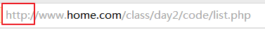
作为一个将要从事web项目开发工作的开发者，对HTTP协议需要有一个基本的了解。
什么是HTTP协议
HTTP：Hyper Text Transfer Protocol 中文翻译为 “超文本传输协议”。
Mr ZHANG是英国人，只会说英语；宫本是日本人，只会说日语；两人想要相互沟通交流，如果都各自使用本国语言，那么对方都将听不懂。
为了能够让两个人无障碍相互沟通交流，让Mr ZHANG和宫本都学会中文，那么，两人就都能够使用中文进行交流了。而中文在这里就变成了两人之间沟通的一个协议。这个协议规定了两方向对方说话，按照某种语法来表达一个具体的意思。
1 | Mr ZHANG(英国人)-->宫本（日本人）: 使用中文说："早上好！" 问候宫本 |
而在web项目中，是浏览器和服务器之间进行交互的一个过程。也就意味着浏览器与服务器两方要通话。
而浏览器和服务器本身并不是同类，双方之间要想互相说话让对方听的明白，可以让双方都支持一个第三方的规定，通过这个规定来进行沟通交流。那么，HTTP协议，就是浏览器和服务器之间沟通的这个规定。
1 | 浏览器-->服务器: 使用HTTP协议规定的格式\n发出请求 |
概念：HTTP协议，就是一种规定，它规定了浏览器请求服务器时，需要用什么样的格式发送请求数据；也规定了服务器响应浏览器时，需要用什么样的格式回应响应数据；这些对数据格式的规定就是HTTP协议。
2. HTTP协议的分类
HTTP协议的分类包含两种：
- HTTP请求
- HTTP响应
HTTP请求
包含四个组成部分：1）请求行；2）请求头；3）空白行；4）请求数据
==图例==：
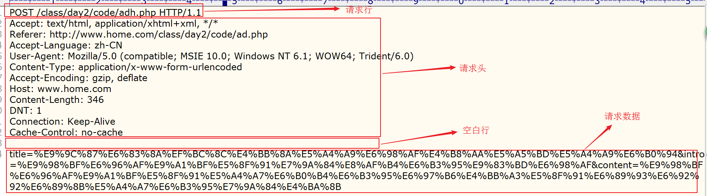
请求行
包含基本的请求信息部分。
==图例==：
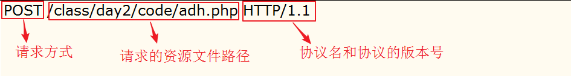
请求头
由一个一个的==请求协议项==组成。
==图例==：
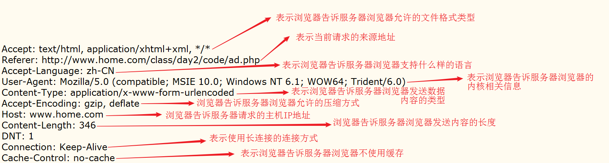
常见的请求头协议项：
host：当前url中所要请求的服务器的主机名（域名）
accept-encoding：是浏览器发给服务器,声明浏览器支持的压缩编码类型 比如gzip
accept_charset：表示，浏览器支持的字符集
==referer==：表示，此次请求来自哪个网址
accept-language：可以接收的语言类型，cn，en等
cookie：如果之前当前请求的服务器在浏览器端设置了数据（cookie），那么当前浏览器再次请求该服务器的时候，就会把对应的数据带过去
user-agent：用户代理，当前发起请求的浏览器的内核信息
accept：表示浏览器可以接收的数据类型
content-length（==post==）：只有post提交的时候才会有的请求头，显示的是当前要提交的数据的长度（字节）
if-modified-since（==get==）：表示，在客户端向服务器请求某个资源文件时，询问此资源文件是否被修改过
==content-type==（==post==）：用于定义网络文件的类型和网页的编码，决定浏览器将以什么形式、什么编码读取这个文件
空白行
专门用于分隔请求头和请求数据的结构。
==图例==：
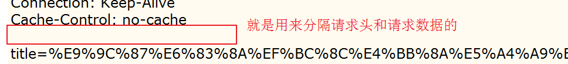
请求数据
只有当post方式提交数据时才会存在。
==图例==：
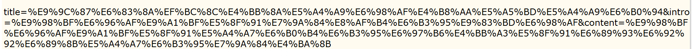
请求数据指的是跟着请求一并携带到指定服务器的数据内容。
小结
HTTP请求包含四个组成部分：1)请求行；2）请求头；3）空白行；4）请求数据；
四个结构的内容：
请求行包括 请求方式，请求资源文件的路径 和 协议名与协议版本号；
请求头包括 请求的协议项
空白行就是分隔请求头和请求数据的
请求数据只有当post方式才会存在
HTTP响应
包含四个组成部分：1）状态行；2）响应头；3）空白行；4）响应数据
==图例==：
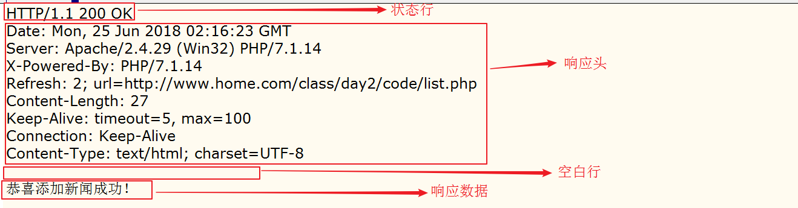
状态行
包含基本的响应信息部分。
==图例==：
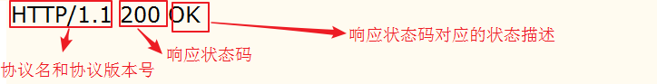
响应状态码
1xx：表示请求尚未完成；
2xx：表示请求和响应都没有问题；
3xx：表示重定向；
4xx：表示请求出现问题，响应失败；
5xx：表示服务器出现问题，响应失败；
==常见的响应状态码==：
200 表示完全没有问题
301和302： 301表示永久重定向；302表示临时重定向；
404：找不到请求的文件
500：服务器出现故障
响应头
由一个一个的响应协议项组成。
==图例==：
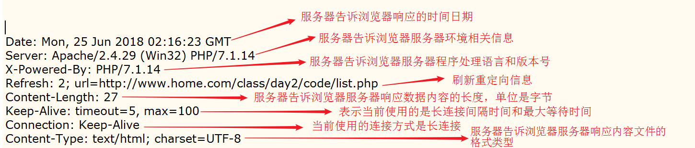
常见的响应头协议项：
server：服务器主机信息
date：响应时间
last-modified：文件最后修改时间（对应请求中：if-modified-since）
content-length：响应主体的长度（字节）
content-type：响应内容的数据类型：text/html，image/png等
==location==：重定向，浏览器遇到这个选项，就立马跳转（不会解析后面的内容）
==refresh==：重定向（刷新），浏览器遇到这个选项就会准备跳转，刷新一般有时间限制，时间到了才跳转，浏览器会继续向下解析
content-encodeing：文件编码格式
cache-control：缓存控制，no-cached不要缓存
空白行
专门用于分隔响应头和响应数据的结构。
==图例==：
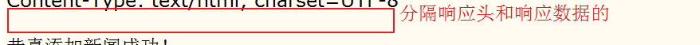
响应数据
包含完整的返回给浏览器的内容。
==图例==：
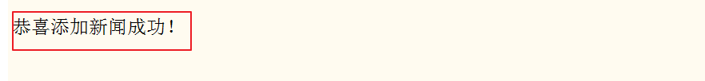
响应数据指的就是程序处理完成之后返回给浏览器的所有数据内容。
小结
HTTP响应包含4个组成部分：1）状态行；2）响应头；3）空白行；4）响应数据；
四个组成部分分别包括
状态行包括 协议名与协议版本号、响应状态码值和响应状态码值对应的响应信息
响应头是由一个一个的响应协议项所组成；
空白行是用于分隔响应头和相应数据的；响应数据就是程序返回给浏览器的所有数据内容；
3. HTTP协议的特点
1) 不仅支持B/S模式，还支持C/S模式。
2) 灵活，支持任意类型的数据。
3) ==无连接特性==，指的是每次完整的请求之后，本次连接要断开。
4) ==无状态特性==，HTTP协议对会话过程中产生的数据不具有记忆能力。
4. HTTP协议的应用
跳转
==需求==：实现访问A页面就直接跳转到B页面的效果。
==解答==：构建一个名为code2.php的程序文件，代码如下：
1 |
|
构建一个名为code3.php的程序文件，代码如下：
1 |
|
访问code2.php，浏览器展示的效果为：
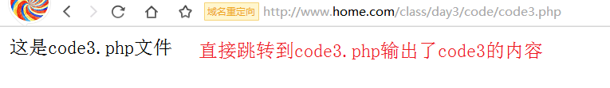
==小结==：在本案例中使用到了http响应协议项的知识点。
刷新跳转
==需求==：实现访问A页面，在A页面停留3秒钟展示提示信息”别眨眼，3秒后我就要跳转了！”，3秒后再跳转到B页面。
==解答==：构建一个名为code4.php的程序文件，代码如下：
1 |
|
构建名为code5.php的程序文件，代码如下：
1 |
|
访问code4.php的效果：
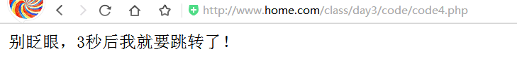
在code4.php停留了3秒后效果为跳转到了code5.php：
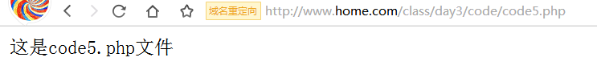
SSL安全访问协议
https简介
HTTPS 即 Secure Hypertext Transfer Protocol 翻译为中文：==安全的超文本传输协议==
它是由Netscape开发并内置于其浏览器中，用于对数据进行压缩和解压操作，并用于网络传输的一种技术。
HTTPS实际上应用了Netscape的完全套接字层（SSL）作为HTTP应用层的子层。（==HTTPS使用端口443==，而不是象HTTP那样使用端口80来和TCP/IP进行通信。）SSL使用40 位关键字作为RC4流加密算法，这对于商业信息的加密是合适的。HTTPS和SSL支持使用==X.509==数字认证，如果需要的话用户可以确认发送者是谁。
https是以安全为目标的HTTP通道，简单讲是HTTP的安全版。即HTTP下加入SSL层，https的安全基础是SSL。
它是一个URI scheme(抽象标识符体系)，句法类同http:体系。用于安全的HTTP数据传输。https:URL表明它使用了HTTP，但HTTPS存在不同于HTTP的默认端口及一个加密/身份验证层（在HTTP与TCP之间）。这个系统的最初研发由网景公司进行，提供了身份验证与加密通讯方法，现在它被广泛用于万维网上安全敏感的通讯，例如交易支付方面。
配置SSL协议
==目标==：使用 https://www.t1.com/t.php 访问 day3/code目录中 的t.php文件。
==步骤==：
第一步，将day3/source目录下的key文件夹拷贝到apache安装目录下的==conf目录==中
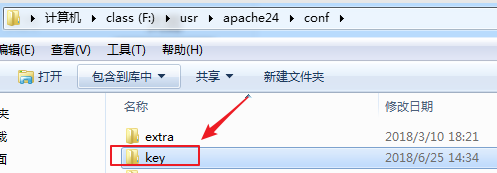
第二步，打开apache的配置文件httpd.conf，开启mod_socache_shmcb 和mod_ssl模块，同时开启引入ssl配置文件，
去掉下图中引入模块的注释，开启模块引入配置，
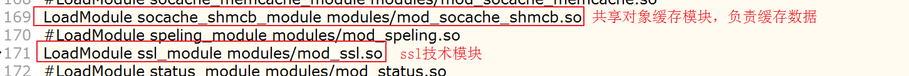
引入ssl配置文件，
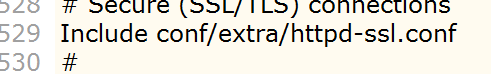
第三步，调整apache安装目录下的extra/httpd-ssl.conf配置文件SSLSessionCache配置项的路径，同时注释VirtualHost示例，
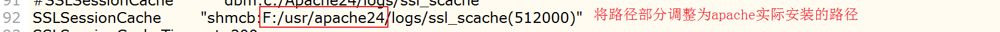
将VirtualHost所有代码全部注释掉，从121行到290行，
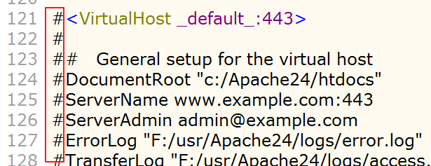
第四步，打开虚拟主机配置文件，增加如下虚拟主机配置项：
1 | #ssl默认监听的端口是443，所以如果要使用默认的端口，就不能再使用80，而应该使用443端口 |
第五步，重启apache，向hosts文件中新增如下配置，
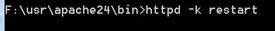
在hosts文件中增加如下配置，(C:/Windows/system32/drivers/etc/hosts)
1 | 127.0.0.1 www.t1.com |
第六步，在day3/code目录中创建名为t.php的程序文件，代码如下
1 |
|
第七步，在浏览器中使用 https://www.t1.com/t.php 访问t.php，测试使用效果
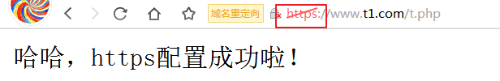
==小结==：
- SSL技术实际就是将http协议传输数据进行加密、解密和传输的一个技术手段。
- 实现了SSL技术的http协议，访问时效果会变成使用https进行访问。
==二、文件编程==
1. 文件编程相关概念
为什么使用文件编程
在web项目中，文件编程的应用相当广泛，比如：文件下载（软件，电影，照片….），生成报表文件并支持下载功能等都需要使用到文件编程技术。
什么是文件编程
所谓的文件编程技术，指的就是对文件或目录的增删改查操作！
2. 文件编程的分类
- 对目录的操作
- 对文件的操作
对目录的操作
设置操作（增删改）
涉及的函数：
mkdir(新目录名[, 目录权限[, 是否递归创建]]) 创建一个目录（make directory）
rmdir(目录全路径) 删除一个目录（remove directory）
rename(旧名字, 新名字) 给目录改名或转移目录
==操作需求1==：在code目录中执行创建目录操作，要求：
- 创建名为dir1和dir2两个目录；
- 递归创建dir3/dir3_1/dir3_1_1目录；
==解答==：构建一个名为code6.php的程序文件，代码如下：
1 |
|
==操作需求1小结==
- mkdir函数可以实现创建目录操作；
- mkdir函数如果不指定第三个参数，则第三个参数默认为false，false表示不进行递归创建，如需递归创建，则需要将第三个参数指定为true；
==操作需求2==：在code目录中执行修改目录操作，要求：
- 将dir1的目录名改为dir100；
- 将dir2目录转移到dir3目录中，并且重命名为dir200；
==解答==：构建一个名为code7.php的程序文件，代码如下：
1 |
|
==操作需求2小结==
- rename函数可以实现修改目录名称的操作；
- rename函数还能够实现转移某个目录到指定的新目录中，同时还可以转移后重命名；
==操作需求3==：在code目录中执行删除目录操作，要求：
- 将dir100删除；
- 尝试将dir3目录删除；
==解答==：构建一个名为code8.php的程序文件，代码如下：
1 |
|
访问code8.php后的效果：
1 | bool(true)//dir100删除成功 |
==操作需求3小结==
- rmdir可以实现删除空目录的操作；
- 如果目录有内容则不支持直接删除，必须先清空目录下的所有内容，才能够删除；
查询操作
涉及的函数：
opendir(目录全路径) 打开一个目录
readdir(打开的目录资源) 读取目录中的内容
closedir(打开的目录资源) 关闭一个打开的目录
==操作需求==：查询code下的demo目录，要求：
- 读取并输出该目录下的所有文件的文件名；
==解答==：构建一个名为code9.php的程序文件，代码如下：
1 |
|
访问code9.php输出的内容：
1 | resource(3) of type (stream)#使用opendir打开的文件资源 |
==操作需求小结==
- 如果要读取一个目录中的内容，首先得使用opendir函数打开一个目录，然后再使用readdir逐个解析出资源中的文件名；
- closedir函数的作用是关闭打开的文件资源；
查询辅助操作
涉及的函数：
==realpath==(路径) 将给定的路径转换为绝对路径地址
==basename==(路径) 返回当前给定路径的基础文件（或文件夹）名部分
==dirname==(路径) 返回当前给定路径的目录部分
is_dir(全路径) 判断一个给定文件是否是一个目录
==操作需求==：在code目录下对相对路径”./“进行操作，要求：
- 将相对路径”./“转换为绝对路径，并将转换后的结果输出；
- 获得”1”中转换的绝对路径中的基础文件名并将其输出；
- 获得”1”中转换的绝对路径中的目录部分并将其输出；
- 判定”./code1.php”是否是一个目录；
- 判定”./dir3”是否是一个目录；
==解答==：构建一个名为code10.php的程序文件，代码如下：
1 |
|
访问code10.php输出的结果：
1 | string(23) "F:\home\class\day3\code" //第1点的输出 |
==操作需求小结==
- realpath函数可以将路径转换为结对路径；
- basename函数可以获得路径中的基础文件名部分；
- dirname函数可以获得路径中的除去基础文件名后的目录路径部分；
- is_dir函数可以判断一个给定的文件是否是一个目录；
对文件的操作
因php版本更替原因，在php中对文件的操作分为两类：
- php4相关文件操作
- php5相关文件操作
PHP4相关文件操作
涉及的函数：
fopen(文件全路径, 打开模式) 打开一个文件
fread(打开的文件资源, 读取内容的长度) 读取文件中的内容
fwrite(打开的文件资源, 写入的内容) 向文件中写入内容
fclose(打开的文件资源) 关闭打开的文件
filesize(文件全路径) 获取文件的大小
==操作需求==：操作code目录下的article.txt文件，要求：
- 将文件中的所有内容读取并输出；
- 向文件中最末尾写入”这是一篇好文章”；
- 关闭打开的文件；
==解答==：构建一个名为code11.php的程序文件，代码如下：
1 |
|
访问code11.php输出的结果为：
1 | resource(3) of type (stream)//输出的$fp |
==小结==：
- 在php4相关的文件操作中，能够对文件执行什么样的操作，取决于fopen是指定的第二个参数打开模式。
PHP5相关文件操作
涉及的函数：
file_put_contents(文件全路径, 写入的内容[, 写入方式]) 向文件中写入内容
写入方式可指定为FILE_APPEND
file_get_contents(文件全路径) 获得文件中的内容
演示案例：读取article.txt文件中的内容，并且向article1.txt文件中写入”好酒哇！”内容
实现：构建名为code12.php的程序文件，代码如下：
1 |
|
访问code12.php，输出的结果为：
1 | string(12) "好酒哇！"//读取的article.txt文件中的所有内容 |
4. 全天总结
http协议分为：1）http请求；2）http响应
http请求包含四个部分，分别是：1)请求行；2）请求头；3）空白行；4）请求数据；
http响应包含四个部分，分别是：1）状态行；2）响应头；3）空白行；4）响应数据；
http协议的特点：
不仅支持B/S模式，还支持C/S模式；
协议支持传输任意类型的数据；
无连接的特性，每次完整的请求之后，本次连接将会断开；
无状态的特性，协议本身不具有记忆能力；
文件编程分为：1）对目录的操作；2）对文件的操作；
对目录的操作：
mkdir函数负责创建目录
rmdir函数负责删除目录
rename函数负责对目录重命名或转移目录到指定的地方去
opendir函数负责打开一个文件
readdir函数负责读取打开的文件资源内容
closedir函数负责关闭打开的目录
对文件的操作：
php4:
fopen函数打开文件资源，需要指定打开模式
fwrite函数负责向打开的文件中写入内容
fread函数负责读取打开文件中的内容，需要指定读取的内容长度
filesize函数负责获取文件的大小
php5:
file_get_contents函数负责读取文件的所有内容
file_put_contents函数负责向文件中写入指定的内容，如果不指定第三个参数，则默认为覆盖写入，如果要追加写入，则需要指定第三个参数为FILE_APPEND